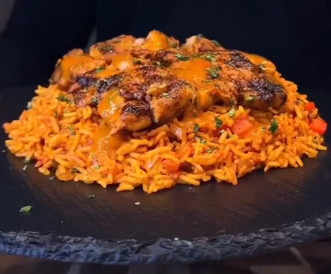

Return to Recipe page
Chicken & Rice Recipe

Peri-Peri Chicken & Rice Recipe
Eating chicken and rice doesn't have to be boring! An absolute favourite of mine is Peri-Peri styled chicken and rice with the perfect spice levels. This recipe is especially helpful for those on a diet or fitness lovers! I hope you enjoy the recipe :)
Ingredients:
For the Chicken:
- 400g raw boneless skinless chicken thighs
- 80g Nando's Medium Peri Peri Marinade
- 1 tsp oregano
- 1-2 tsp smoked paprika
- 1 tsp salt & black pepper
- 1 tsp onion powder
- 20g light butter or cooking spray
For the Spicy Rice:
- 120g uncooked washed basmati rice
- 1 diced white onion
- 1 diced red bell pepper
- 1 tsp salt & pepper
- 1 tsp paprika
- 1/2 tsp chilli powder
- 1 tsp cumin
- 1/2 tsp turmeric
- 50g tomato paste
- 250ml water
Steps:
- Mix all ingredients for the Chicken marinade and marinate it.
- Once marinated, spray a pan with cooking spray or use 20g of light butter
- At medium heat, place the chicken inside the pan and cook until golden brown
- Now for the rice, place the rice into a pan with the diced white onion and bell pepper
- Proceed to add the salt & pepper, paprika, chilli powder, cumin and turmeric
- Add the remaining two ingredients of tomato paste and water
- Let the rice simmer until well cooked
- On a plate, serve the Juicy Peri-Peri Chicken and Rice